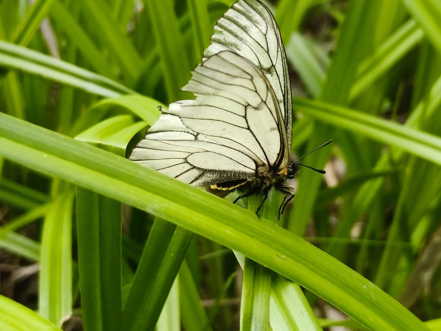

昆虫 · 动物界
白绢蝶 Parnassius stubbendorfii

翅面洁白的绢蝶，前翅外缘有一条黑色宽带，后翅缀有红斑，栖息于东北至华北的山地林缘，幼虫取食紫堇。
- 分类
- 门节肢动物门纲昆虫纲目鳞翅目科凤蝶科属绢蝶属
- 栖息环境
- 海拔数百米至一千五百米的山地林缘、疏林草坡和溪谷旁
- 地理分布
- 中国东北与华北山地，以及朝鲜半岛、俄罗斯远东和日本
- 保护级别
- 尚无专门保护评估；森林采伐与生境破碎化压缩适宜生境
物种志
白绢蝶的翅展约五至六厘米，翅面乳白色，质地薄而半透明，前翅外缘有一条明显的黑色宽带，后翅中部常有两三个红色圆斑，斑外镶黑边，翅脉淡黑而清晰。它的身体灰黑，披灰白色绒毛，触角呈棒状，末端略膨大。雌蝶翅面略宽，红斑也往往更明显，与近缘的冰清绢蝶相比，它的黑带更宽、底色更纯白。
它分布于中国东北、华北的山地，以及朝鲜半岛、俄罗斯远东和日本，栖息在海拔数百米至一千五百米的山地林缘、疏林草坡和溪谷旁，成虫多在春末夏初出现，喜在阳光下的野花上吸蜜。幼虫以紫堇属植物为食，卵单产于寄主的茎叶或附近枯枝上，以卵越冬，翌年春季孵化，幼虫期约一个月，化蛹于落叶层下或石缝中，一年发生一代。目前尚无专门的保护评估，森林采伐和生境破碎化会压缩其适宜栖息地。
形态与习性
- 翅展约五至六厘米，翅面乳白半透明
- 前翅外缘有宽阔的黑色带纹
- 后翅中部有两三个镶黑边的红色圆斑
- 食性幼虫取食紫堇属植物的茎叶
- 越冬以卵越冬，翌年春季孵化
- 发生世代一年一代，成虫见于春末夏初
趣味知识
- 白绢蝶与冰清绢蝶外形极像，靠更宽的黑色外缘带和更纯白的底色区分。
- 它的卵要在枝头或石缝里待上大半年，直到第二年春天紫堇发芽才孵化。
- 成虫喜欢停在溪谷边的湿沙上吸水，借此补充繁殖所需的矿物质。